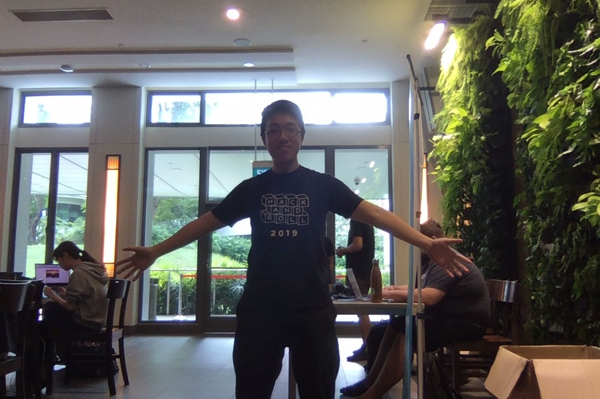

<!DOCTYPE html>
<html lang="en">

<head>
  <meta charset="UTF-8">
  <meta name="viewport" content="width=device-width, initial-scale=1.0">
  <meta http-equiv="X-UA-Compatible" content="ie=edge">
  <title>Document</title>
</head>

<body>
  <input type="checkbox" id="pause" value="pause">
  <div id="main">
    <video id="video" playsinline style="display: none;"></video>
    <canvas id="output"></canvas>
  </div>
  <!--  -->
  <!-- Load TensorFlow.js -->
  <script src="node_modules/@tensorflow/tfjs/dist/tf.min.js"></script>
  <!-- Load Posenet -->
  <script src="node_modules/@tensorflow-models/posenet/dist/posenet.min.js">
  </script>
  <script type="text/javascript">
    // demo util
    const color = 'aqua';
    const boundingBoxColor = 'red';
    const lineWidth = 2;

    function toTuple({ y, x }) {
      return [y, x];
    }
    // Draws a point on a canvas
    function drawPoint(ctx, y, x, r, color) {
      ctx.beginPath();
      ctx.arc(x, y, r, 0, 2 * Math.PI);
      ctx.fillStyle = color;
      ctx.fill();
    }
    // Draws a line on a canvas, i.e. a joint
    function drawSegment([ay, ax], [by, bx], color, scale, ctx) {
      ctx.beginPath();
      ctx.moveTo(ax * scale, ay * scale);
      ctx.lineTo(bx * scale, by * scale);
      ctx.lineWidth = lineWidth;
      ctx.strokeStyle = color;
      ctx.stroke();
    }
    // Draws a pose skeleton by looking up all adjacent keypoints/joints
    function drawSkeleton(keypoints, minConfidence, ctx, scale = 1) {
      const adjacentKeyPoints =
        posenet.getAdjacentKeyPoints(keypoints, minConfidence);

      adjacentKeyPoints.forEach((keypoints) => {
        drawSegment(
          toTuple(keypoints[0].position), toTuple(keypoints[1].position), color,
          scale, ctx);
      });
    }
    // Draw pose keypoints onto a canvas
    function drawKeypoints(keypoints, minConfidence, ctx, scale = 1) {
      for (let i = 0; i < keypoints.length; i++) {
        const keypoint = keypoints[i];

        if (keypoint.score < minConfidence) {
          continue;
        }

        const { y, x } = keypoint.position;
        drawPoint(ctx, y * scale, x * scale, 3, color);
      }
    }
    // Draw the bounding box of a pose. For example, for a whole person standing in an image, the bounding box will begin at the nose and extend to one of ankles
    function drawBoundingBox(keypoints, ctx) {
      const boundingBox = posenet.getBoundingBox(keypoints);
      ctx.rect(
        boundingBox.minX, boundingBox.minY, boundingBox.maxX - boundingBox.minX,
        boundingBox.maxY - boundingBox.minY);
      ctx.strokeStyle = boundingBoxColor;
      ctx.stroke();
    }
  </script>
  <script type="text/javascript">
    (async function () {
      const poseImg = document.querySelector('img#pose');
      const video = document.querySelector('#video');
      const videoWidth = window.innerWidth;
      const videoHeight = window.innerHeight;

      // loads camera feed into video source
      async function setupCamera() {
        if (!navigator.mediaDevices || !navigator.mediaDevices.getUserMedia) {
          throw new Error('Browser API navigator.mediaDevices.getUserMedia not available');
        }
        const video = document.getElementById('video');
        video.width = videoWidth;
        video.height = videoHeight;
        const stream = await navigator.mediaDevices.getUserMedia({
          'audio': false,
          'video': {
            facingMode: 'user',
            width: videoWidth,
            height: videoHeight,
          },
        });
        video.srcObject = stream;

        return new Promise((resolve) => {
          video.onloadedmetadata = () => {
            resolve(video);
          };
        });
      }

      // plays video after setup camera
      async function loadVideo() {
        const video = await setupCamera();
        video.play();
        return video;
      }

      const defaultQuantBytes = 2;
      const defaultMobileNetMultiplier = 0.75;
      const defaultMobileNetStride = 16;
      const defaultMobileNetInputResolution = 500;
      const defaultResNetMultiplier = 1.0;
      const defaultResNetStride = 32;
      const defaultResNetInputResolution = 250;
      const guiState = {
        algorithm: 'single-pose',
        input: {
          architecture: 'MobileNetV1',
          outputStride: defaultMobileNetStride,
          inputResolution: defaultMobileNetInputResolution,
          multiplier: defaultMobileNetMultiplier,
          quantBytes: defaultQuantBytes
        },
        singlePoseDetection: {
          minPoseConfidence: 0.7,
          minPartConfidence: 0.5,
        },
        multiPoseDetection: {
          maxPoseDetections: 5,
          minPoseConfidence: 0.15,
          minPartConfidence: 0.1,
          nmsRadius: 30.0,
        },
        output: {
          showVideo: true,
          showSkeleton: true,
          showPoints: true,
          showBoundingBox: true,
        },
        net: null,
      };
      // setup gui
      function setupGui(cameras, net) {
        guiState.net = net;
        console.log('guistate.net', guiState.net);
        if (cameras.length > 0) {
          guiState.camera = cameras[0].deviceId;
        }
      }

      // posenet estimation - runs in requestAnimationFrame loop
      function detectPoseInRealTime(video, net) {
        const canvas = document.querySelector('#output');
        const ctx = canvas.getContext('2d');
        const flipPoseHorizontal = true;

        canvas.width = videoWidth;
        canvas.height = videoHeight;

        // runs in requestAnimationFrame loop
        async function poseDetectionFrame() {
          let poses = [];
          let minPoseConfidence;
          let minPartConfidence;
          const pose = await guiState.net.estimatePoses(video, {
            flipHorizontal: flipPoseHorizontal,
            decodingMethod: 'single-person'
          });
          poses = poses.concat(pose);
          minPoseConfidence = +guiState.singlePoseDetection.minPoseConfidence;
          minPartConfidence = +guiState.singlePoseDetection.minPartConfidence;
          ctx.clearRect(0, 0, videoWidth, videoHeight);
          if (guiState.output.showVideo) {
            ctx.save();
            ctx.scale(-1, 1);
            ctx.translate(-videoWidth, 0);
            ctx.drawImage(video, 0, 0, videoWidth, videoHeight);
            ctx.restore();
          }
          // draw poses skeletons
          for (const { score, keypoints } of poses) {
            if (score >= minPoseConfidence) {
              console.log(keypoints);
              if (guiState.output.showPoints) {
                drawKeypoints(keypoints, minPartConfidence, ctx);
              }
              if (guiState.output.showSkeleton) {
                drawSkeleton(keypoints, minPartConfidence, ctx);
              }
              if (guiState.output.showBoundingBox) {
                drawBoundingBox(keypoints, ctx);
              }
            }
          }
          if (!document.querySelector('#pause').checked) {
            requestAnimationFrame(poseDetectionFrame);
          }
        } // end of poseDetectionFrame
        poseDetectionFrame();
      } // end of detectPoseInRealTime

      // init posenet model and first call to detectPoseInRealTime
      async function bindPage() {
        const net = await posenet.load({
          architecture: guiState.input.architecture,
          outputStride: guiState.input.outputStride,
          multiplier: guiState.input.multiplier,
          quantBytes: guiState.input.quantBytes
        });
        console.log(net)
        let video;
        try {
          video = await loadVideo();
        } catch (e) {
          console.error(e);
          console.error('browser does not support video');
        }
        setupGui([], net);
        detectPoseInRealTime(video, net);
      }
      navigator.getUserMedia = navigator.getUserMedia || navigator.webkitGetUserMedia || navigator.mozGetUserMedia;
      bindPage();
    })();
  </script>
</body>

</html>